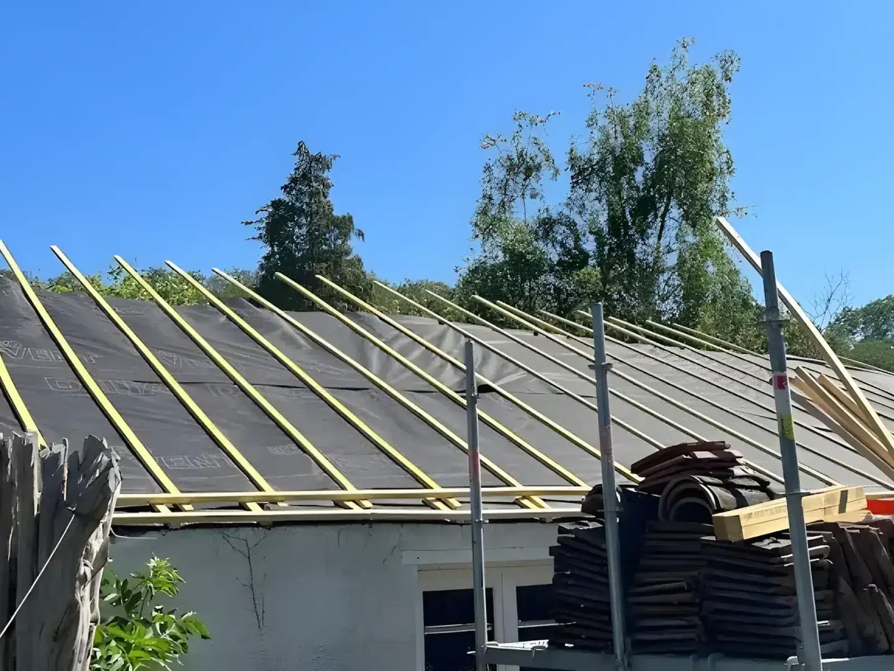
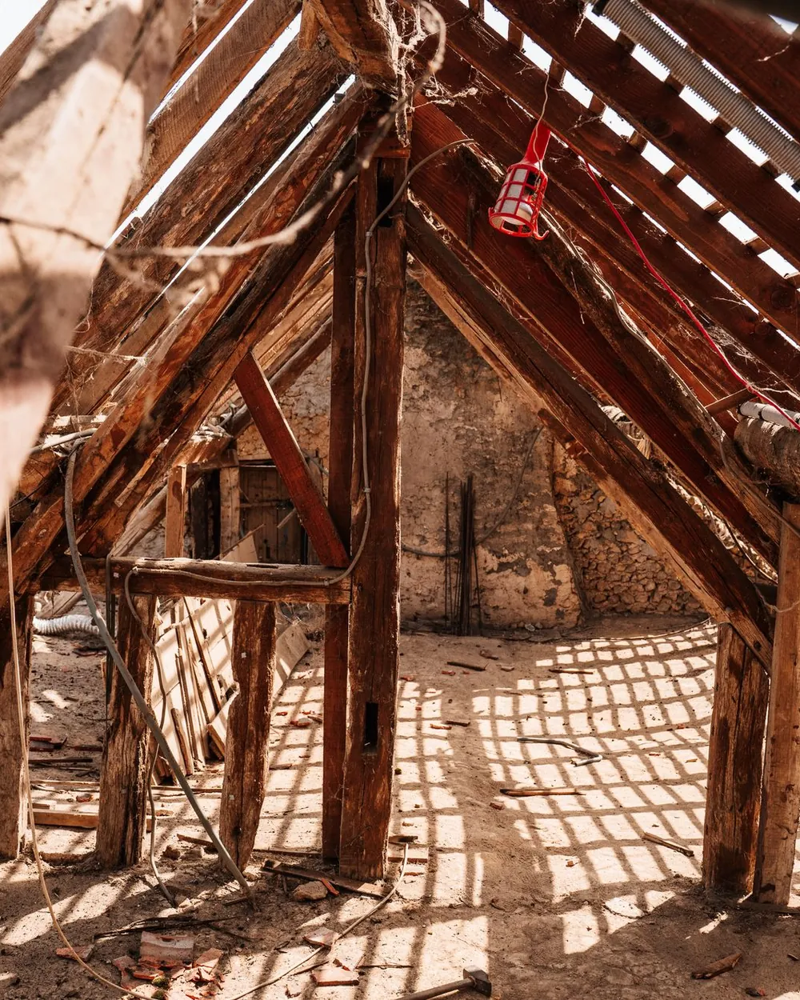

01
Couverture & charpente
Tuile, ardoise ou acier. Nous refaisons les toitures usées, réparons celles qui fuient, et reprenons la charpente quand elle en a besoin.
- Réfection
- Dépose complète, écran de sous-toiture, liteaunage et couverture neuve.
- Charpente
- Traditionnelle, reprise de pièces, renfort et pose de fenêtres de toit.
- Urgence
- Recherche de fuite, mise hors d'eau, réparation ponctuelle.

